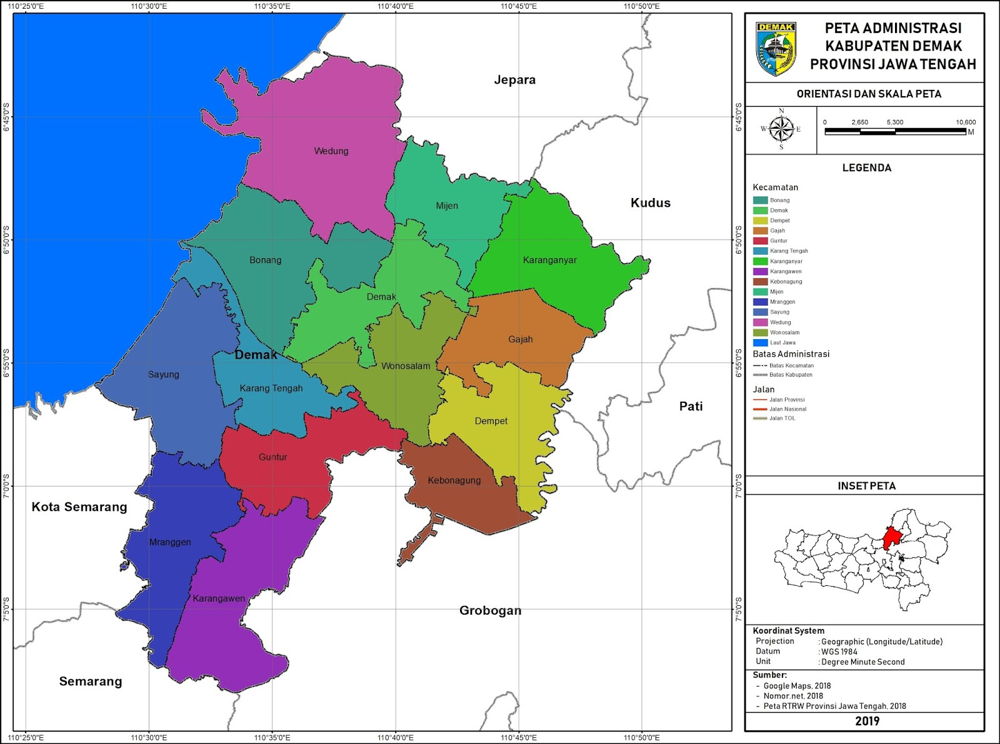

VISI DAN MISI KABUPATEN DEMAK.
VISI
’’Terwujudnya Masyarakat Demak Yang Agamis Lebih Sejahtera, Mandiri, Maju, Kompetitif, Kondusif, Berkepribadian Dan Demokratis”
MISI
- Menjadikan nilai-nilai agama melekat pada setiap kebijakan pemerintah dan perilaku masyarakat.
- Mewujudkan tata kelola pemerintahan yang lebih bersih, efektif, efisien, dan akuntabel.
- Meningkatkan kedaulatan pangan dan ekonomi kerakyatan berbasis potensi lokal serta mengurangi tingkat pengangguran.
- Mengakselerasi pembangunan infrastruktur strategis, kewilayahan dan meningkatkan keterpaduan perkembangan kota dan desa.
- Meningkatkan kualitas Pendidikan dan kesehatan sesuai standar serta perlindungan sosial dan penanggulangan kemiskinan.
- Mengembangkan kapasitas pemuda, olahraga, seni-budaya, meningkatkan keberdayaan perempuan, perlindungan anak dan mengendalikan pertumbuhan penduduk.
- Mewujudkan kualitas pelayanan Investasi dan meningkatkan kualitas pelayanan publik.
- Mewujudkan kelestarian lingkungan hidup dalam pengelolaan sumberdaya alam.